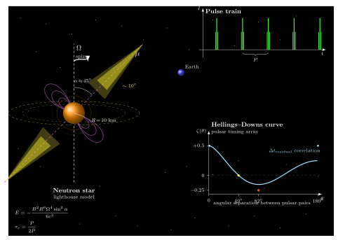

脉冲星的光为什么像钟摆一样精确?
1967 年 11 月, 剑桥博士生 Jocelyn Bell Burnell 在纸带上看到一串异常规律的脉冲: 每 1.337 秒一个小包, 精准得像人造的. 她和导师 Hewish 半开玩笑地把信号源标为 "LGM-1" (Little Green Men, 小绿人). 几周后第二个、第三个源陆续出现, 这个"外星文明"假说迅速被放弃——因为不可能几个不同方向的外星人都用同一种调制. 1968 年 Thomas Gold 给出正确解释: 这是快速自转、带强磁场的中子星, 磁极像灯塔的光束周期性扫过地球. 脉冲星就这样走进了物理学.
为什么一颗恒星塌缩到 10 km 尺度, 就会把自己的光变成如此精确的节拍? 要回答这个问题, 我们得从角动量守恒、强磁场与狭窄辐射束这三件事同时下手.
一、从白矮星到中子星: 为什么它转得那么快、磁场那么强
一颗大致太阳质量、半径 $R_\odot \approx 7\times10^5$ km 的恒星, 表面自转一次大约 25 天. 当它的核心在超新星爆发中塌缩成半径 $R \approx 10$ km 的中子星时, 若角动量近似守恒, $I\Omega = MR^2\Omega/\text{const}$ 告诉我们自转角速度随 $R^{-2}$ 放大. 把 $R$ 从 $7\times10^5$ km 压到 $10$ km, 比例是 $7\times10^4$, 平方就是 $5\times10^9$. 一个 25 天 (约 $2\times10^6$ s) 的周期被这个因子一压, 理论上能到毫秒量级. 现实里塌缩过程要损失一些角动量到抛出物和中微子里, 但典型新生脉冲星的周期仍然在几十毫秒到 1 秒之间, 与这个估算一致.
磁场的故事类似. 磁通量 $\Phi = B\cdot \pi R^2$ 在高导电率极限下守恒, 所以 $B \propto R^{-2}$, 同样放大约 $5\times10^9$ 倍. 太阳黑子区域的磁场大约 $10^3$ G, 塌缩后自然到达 $10^{12}$ G 量级, 普通脉冲星观测值 $10^8$–$10^{13}$ G 与之吻合. 极端的磁星 (SGRs、AXPs) 甚至能达到 $10^{14}$–$10^{15}$ G, 那里的电子回旋频率已经进入硬 X 射线波段, 量子电动力学的真空双折射效应都变得可观.
高速自转 + 强磁场 + 磁轴与自转轴不重合, 这三者合起来就是"灯塔". 磁极附近的极冠区 (polar cap) 带电粒子被感应电场从表面拔起, 沿弯曲磁力线加速; 相对论性电子做的弯曲辐射 (curvature radiation) 与同步辐射, 把能量集中在一个锥角 $\theta \sim 1/\gamma$ 的窄束里 ($\gamma$ 是电子洛伦兹因子). 当自转把这束光锥每 $P$ 秒扫过地球一次, 我们就看到一个脉冲.

二、磁偶极辐射与自转减速: 从能量损耗反推钟的寿命
中子星不是永动的钟, 它的磁偶极在真空中加速转动本身就会辐射能量. 回忆经典电动力学 (Larmor–Jackson): 磁偶极矩 $\mathbf{\mu}$ 以角频率 $\Omega$ 绕自转轴做旋转, 垂直于自转轴的分量 $\mu\sin\alpha$ 随时间做简谐变化, 其二阶导数 $\ddot{\mathbf{\mu}}$ 决定辐射功率. 代入公式, 得到磁偶极辐射的功率
$$ \dot E = -\frac{B^2 R^6 \Omega^4 \sin^2\alpha}{6 c^3}. \tag{1} $$
这份能量从哪里来? 只能从转动能 $E_{\rm rot} = \tfrac{1}{2} I \Omega^2$ 中扣除, $I \approx \tfrac{2}{5}MR^2$ 约 $10^{38}$ kg·m$^2$. 因此 $I\Omega\dot\Omega = \dot E$, 得 $\dot\Omega \propto -\Omega^3$, 也就是自转在逐渐减速. 把 $\Omega = 2\pi/P$ 代入, 可以把观测到的 $P$ 与 $\dot P$ 反推特征年龄
$$ \tau_c \equiv \frac{P}{2\dot P}. \tag{2} $$
对著名的蟹状星云脉冲星 PSR B0531+21, $P = 33.4$ ms, $\dot P = 4.2\times10^{-13}$, 代入得 $\tau_c \approx 1260$ 年, 与我们所知蟹状超新星爆发于公元 1054 年的历史记录惊人地接近——《宋会要》《宋史》的"天关客星"正是这颗恒星的讣告. 反过来, 由 $\dot P$ 与 $P$ 求 $B$ 也是标准做法: 令 (1) 式等于 $-I\Omega\dot\Omega$, 得 $B \sim 3.2\times10^{19}\sqrt{P\dot P}$ G, 蟹状得 $B \approx 4\times10^{12}$ G. 一套公式同时告诉我们钟的寿命与磁场, 这就是磁偶极模型的力量.
注意 (1) 式对 $\alpha$ 的依赖: 若磁轴与自转轴完全对齐 ($\alpha=0$), 辐射功率为零, 也就看不到脉冲. 这就是为什么灯塔模型必须要求轴不重合——脉冲的存在本身是磁偶极辐射的标志.
三、毫秒脉冲星: 比原子钟还稳的宇宙秒针
一般的脉冲星周期是几十毫秒到几秒, 寿命 $\tau_c$ 约 $10^6$–$10^7$ 年. 但有一类格外"老练"的成员叫毫秒脉冲星 (MSP), 周期短到 1–10 ms, 磁场却只有 $10^8$–$10^9$ G, 看似矛盾. 原因是这类脉冲星几乎都在双星系统中: 它们年轻时磁场强, 自转慢, 后来从红巨星伴星吸积物质 (带着伴星的角动量), 被"再加速"成毫秒自转, 同时磁场被吸积物质埋藏衰减. 这就是"再循环脉冲星" (recycled pulsar) 场景.
目前最快的毫秒脉冲星 PSR J1748-2446ad 周期 $P = 1.397$ ms——也就是说它每秒自转 716 次. 把这件事想象一下: 一个直径 20 km 的球体, 表面每秒转过 716 圈, 赤道上一个点每秒走过 $2\pi R\cdot 716 \approx 4.5\times10^4$ km/s, 约 $0.15 c$. 下一步自然要问: 它还能更快吗?
极限来自一个朴素的牛顿条件——赤道处离心力不能超过表面引力, 否则中子星直接解体. 开普勒破碎极限给出
$$ P_{\min} \approx 2\pi\sqrt{\frac{R^3}{GM}} \sim 2\pi\sqrt{\frac{(10^4\,\text{m})^3}{6.67\times10^{-11}\cdot 2.8\times10^{30}}} \approx 0.73\,\text{ms}, $$
数值上约为 $0.6$–$0.8$ ms, 与观测最快周期 1.4 ms 只差一倍. 这说明 J1748-2446ad 已经在离心力极限附近, 也解释了为什么观测上 $P\lesssim 1$ ms 的脉冲星极为罕见.
MSP 稳定到什么程度? PSR B1937+21 的周期 $P = 1.557\,806$ ms, 长期稳定度 $\Delta P/P \sim 10^{-15}$ 量级, 与最好的铯原子钟在几十年以上时间尺度上的稳定度相当, 有些 MSP 的长期钟稳性甚至超过原子钟. 这是因为 MSP 的辐射损耗极小 ($\dot P\sim 10^{-19}$), 外界扰动也被它极大的转动惯量所 "滤波". 你可以在地球上造一个实验室, 但要造一个重 $1.4 M_\odot$、每秒转几百圈的飞轮作为参考钟, 只有宇宙能做到.
四、脉冲星计时阵列: 用几十把宇宙钟摆听见纳赫兹引力波
一把好钟, 可以用来做很多事. 如果我们长期监测一颗 MSP, 记录每一个脉冲到达望远镜的时间, 再减去根据已知自转模型 (考虑多普勒、地球公转、相对论延迟等) 预期的时间, 就得到时间残差 $\Delta t$. 残差里包含了所有我们没建模的物理: 星际介质色散变化、地球位置误差、还有——引力波.
当一列引力波经过我们与脉冲星之间的视线, 它会拉伸和压缩时空, 使脉冲走的路程发生微弱变化, 在 $\Delta t$ 里留下周期信号. 单颗脉冲星的残差很难区分噪声与引力波; 但如果同时监测几十颗分布在天空不同方向的 MSP, 引力波对不同方向留下的残差相关性有一个理论预言, 这就是 1983 年 Hellings 和 Downs 推出来的角相关曲线. 简单说: 同方向 ($\theta\to 0$) 两颗 MSP 的残差相关系数趋于 $+0.5$, 随 $\theta$ 增大降到零 (约 $\theta\approx 49^\circ$), 再到极小约 $-0.25$ (约 $\theta\approx 82^\circ$), 再回升. 这条曲线是任何各向同性引力波背景的"指纹"——是它, 就有它的形状; 不是它, 绝不会有这样的角结构.
这正是 NANOGrav、EPTA、PPTA、CPTA 这几个国际合作做的事. 2023 年 6 月, NANOGrav 发布 15 年数据集, 对约 68 颗 MSP 做联合计时分析, 观测到 Hellings–Downs 曲线的证据 (置信度约 $3$–$4\sigma$), 推断存在频率在 nHz、特征应变 $h_c \sim 10^{-15}$ 的随机引力波背景. 物理源最可能是超大质量黑洞双星 (每个 $\sim 10^9\,M_\odot$) 并合前的轨道运动——它们辐射的引力波周期是年的量级, 也就是 nHz 频段. LIGO 听的是 $10$–$1000$ Hz 的"高音"(恒星级黑洞并合), LISA 听 mHz 的"中音"(大质量黑洞和极端质量比旋近), 脉冲星计时阵列听 nHz 的"低音"——完整的引力波频谱, 由不同尺寸的探测器分工.
值得一提的是更早、更直接的引力波证据: 1974 年 Russell Hulse 与 Joseph Taylor 发现了第一个双脉冲星 PSR B1913+16——两个中子星相互绕转, 轨道周期 $7.75$ 小时. 随后他们用脉冲到达时间的 Shapiro 延迟等精确测定轨道参数, 观测到轨道周期每年缩短 $76.5\ \mu\text{s/yr}$, 这与广义相对论预言的引力波辐射导致的轨道衰减精确相符 (精度好于千分之一). 这是对引力波存在的第一个定量证据, 两人因此获得 1993 年诺贝尔物理学奖——那时距 LIGO 直接探测还有 22 年. 而现在, Hulse-Taylor 双星的后辈——分布全天的毫秒脉冲星——变成了监听整个宇宙引力波背景的麦克风阵列. 脉冲星的光, 既是我们能得到的最稳的时钟, 也是我们能找到的最灵敏的引力波天线.
小结
脉冲星的周期如钟摆, 背后是三件事合一: 塌缩后的 10 km 中子星用角动量和磁通量守恒放大了自转与磁场; 磁偶极辐射公式 (1) 给出能量损耗, 让自转逐渐变慢并留下 (2) 式的特征年龄; 毫秒脉冲星在再循环后做到 $\Delta P/P\sim 10^{-15}$ 的稳定度, 几近开普勒破碎极限 $\sim 0.6$ ms. 把几十颗这样的钟连成阵列, 我们从到达时间残差的 Hellings–Downs 角相关里, 听到了 2023 年 NANOGrav 报告的 nHz 引力波背景——背后可能是超大质量黑洞双星并合的合唱. 从 1967 年 Bell Burnell 发现第一颗 "LGM", 到 Hulse-Taylor 双星 (1993 诺奖), 再到 NANOGrav (2023), "光是什么"这个问题在宇宙尺度上被反转回来: 光是我们的秒针, 也是我们的耳朵. 下一节, 我们把视角从冷酷的中子星切回温暖的活物, 看光如何被叶绿体捕获, 把太阳的无限变成植物的有限——光合作用.
▲